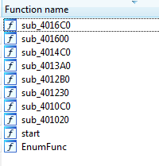

This is my first attempt at reverse engeering malware I was pretty much jumping into the deep end with this so i was a little but lost to start of with
After putting bmwin in IDA Pro 6.6 64-bit we se a list of funtions
Start is the main function so we look in there we see
<void start() { if ( !CoInitializeEx(0, 2u) ) { sub_4010C0(); CoUninitialize(); } }
We can see that sub_4010C0 is the main class if we take a look in that funtion by double clicking it we see
WPARAM sub_4010C0() { HINSTANCE v0; // edi@1 WPARAM result; // eax@2 HDC v2; // esi@3 int nWidth; // ST40_4@3 int v4; // ebx@3 HWND v5; // eax@3 BOOL v6; // eax@4 struct tagMSG Msg; // [sp+14h] [bp-44h]@4 WNDCLASSW WndClass; // [sp+30h] [bp-28h]@1 v0 = GetModuleHandleW(0); WndClass.cbClsExtra = 0; WndClass.cbWndExtra = 0; WndClass.hIcon = 0; WndClass.lpszMenuName = 0; WndClass.lpfnWndProc = sub_401020; WndClass.style = 3; WndClass.hInstance = v0; WndClass.lpszClassName = L"My Window Class!"; WndClass.hCursor = LoadCursorW(0, (LPCWSTR)0x7F00); WndClass.hbrBackground = CreateSolidBrush(0); if ( RegisterClassW(&WndClass) && (v2 = GetDC(0), nWidth = GetDeviceCaps(v2, 8), v4 = GetDeviceCaps(v2, 10), ReleaseDC(0, v2), v5 = CreateWindowExW(0, L"My Window Class!", L"System Error", 0x80000000, 0, 0, nWidth, v4, 0, 0, v0, 0), (dword_403000 = (int)v5) != 0) ) { ShowWindow(v5, 1); Msg.hwnd = 0; Msg.message = 0; Msg.wParam = 0; Msg.lParam = 0; Msg.time = 0; Msg.pt.x = 0; Msg.pt.y = 0; v6 = GetMessageW(&Msg, 0, 0, 0); if ( v6 ) { while ( v6 != -1 ) { TranslateMessage(&Msg); DispatchMessageW(&Msg); v6 = GetMessageW(&Msg, 0, 0, 0); if ( !v6 ) goto LABEL_7; } result = 3; } else { LABEL_7: result = Msg.wParam; } } else { result = -1; } return result; }
This peice of code may look very daunting at first so lets pick it apart bit by bit
On the first 11 lines it is just init code it calls a funtion "sub_401020" we will look into this further soon.
Below that it names the class below that it removes the cursor and loads a black background. Next it hits a if block this block basically asks if another class is there. A couple of lines down we see this
v5 = CreateWindowExW(0, L"My Window Class!", L"System Error", 0x80000000, 0, 0, nWidth, v4, 0, 0, v0, 0),
(dword_403000 = (int)v5) != 0) )This is were the "Malware" starts it just creates a black window and shows a "fake" system error.
But if we look deeper into other funtions I find "winupd.exe" is called many times which is weird since it is not a essential part of windows and just gets remade after a reboot
Also lookups for IsUserAdmin regkey is called many times after looking futher nothing actully malsious is actually done to the system but this funtion shows you what is done
char sub_4016C0() { HRESULT v0; // eax@1 DWORD v1; // eax@2 CHAR Filename; // [sp+0h] [bp-208h]@1 CHAR pszPath; // [sp+104h] [bp-104h]@1 GetModuleFileNameA(0, &Filename, 0x103u); v0 = SHGetFolderPathA(0, 32803, 0, 0, &pszPath); if ( v0 >= 0 ) { if ( (lstrcatA(&pszPath, "\\Temp\\"), v1 = GetFileAttributesA(&pszPath), v1 != -1) && v1 & 0x10 || (v0 = CreateDirectoryA(&pszPath, 0)) != 0 ) { lstrcatA(&pszPath, "winupd.exe"); LOBYTE(v0) = lstrcmpA(&pszPath, &Filename) == 0; if ( !(_BYTE)v0 ) LOBYTE(v0) = MoveFileExA(&Filename, &pszPath, 1u); } } return v0; }
This funtion basically checks if other funtions have done there job then it get's the path of winupd.exe and then moves it to the \\tmp\\ drive.
So after looking through all the funtions i basically know what the program is going todo. After attaching the debugger and running it all it did was make the screen go black and didn't even show the error we looked at, all it did was remove the winupd.exe which is not bad from a "Malware" point of view.
When you execute bwin.exe it looks in the registery and looks if the userisadmin if not then it quits but if they are then it create a window makes it black and then makes a fake error while behind the window a shell opens and moves winupd.exe to the \\tmp\\ drive not much for a malware.
There are no real obfuscations nor anti-debugger mechanisms implemented.
It also is outdated and does not work as intended and doesn't do majour damage to your computer or even damage so the creator of this didnt really want it to be bad nor do anything bad.